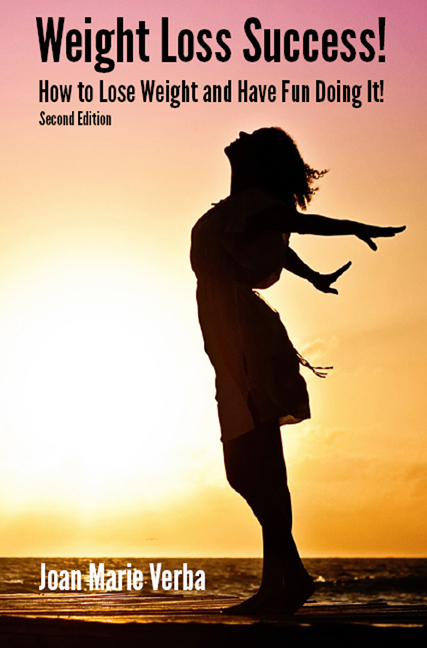

A message from the author: Like you, I have lost weight and gained it back. I have started exercise programs and not stuck to them. But, in 1979, I lost weight and have kept it off since then. If you also have tried to lead a healthy lifestyle and found your efforts didn’t work in the past, I have GOOD NEWS! Because I have found that the “secret” to maintaining a healthy lifestyle is HAVING FUN! Success comes through having fun! Isn’t that great? The reason that the diet or exercise or lifestyle program didn’t work in the past is because you weren’t having fun at it! Is losing weight, exercising, and maintaining healthy habits a lot of work? Of course it is! That’s why it’s doubly important to have as much fun as you can while you’re doing it, because if it’s not fun, you’re not going to do it! Right? Right!
Contents:
The Importance of Having Fun Losing Weight
My Story
Why the Diet Didn't Work Before
Losing Weight Is Hard
Lifestyle Changes
What Do I Eat?
What About Exercise?
Games the Food-Addicted Play
Motivation
Buy Paperback
Buy Ebook
The motto that inspires me is: “Do one thing every day that makes you happy!” Why? Because when you participate in activities that are FUN for you, you’ll stick with them! When you find nutritional, healthy foods that you enjoy, you’ll eat them! When you are spending your time on FUN activities, you won’t have the time to be stressed (and you’ll avoid emotional eating)! Check out the book and see! (Contains information and links to use to build your own weight loss plan!) [Joan Marie Verba has had nine years' experience advising clients how to lose weight as part of a nationally advertised weight loss program, and has additional training as a health coach.]
Click image below for a PDF file of heart-healthy recipes, courtesy of the Department of Health and Human Services.